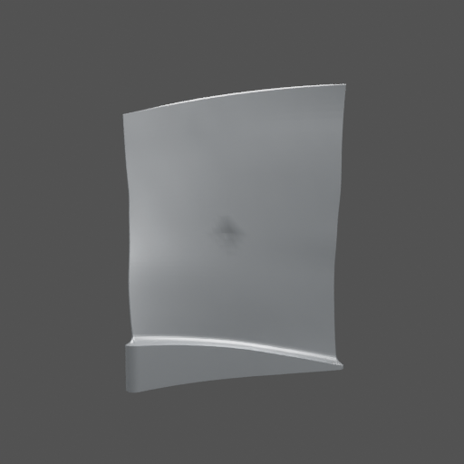
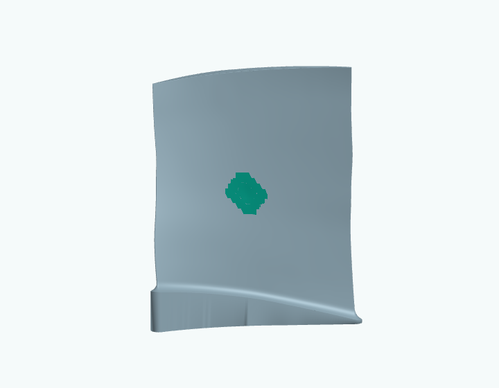

JET BLADE 3D / RESEARCH OVERVIEW / 23 SEPTEMBER 2026
Can inspection images tell us where a blade physically changed—and recover the actual change in its three-dimensional shape?
Both the location and the estimated shape are in 3D. The healthy blade is supplied in our current experiments. This is not a claim that we can recover an unknown blade accurately from an arbitrary photograph.


Actual synthetic case c033: one of two input images, and the saved mesh estimate. Teal shows predicted surface movement, not confidence. The depth is imperfect.
A learned image detector selects a point. Known camera and surface records map it onto a supplied mesh. A correct point does not guarantee a complete damage mask.
Small learned models use a healthy mesh and paired image evidence to produce actual changed-mesh outputs. False movements and missed damage remain problems.
The latest experiment compares shape-only and shape-plus-color fitting. It is a restricted, nonlearned diagnostic—not the final proposed method.
Public source: PLAID / Rotor37, CC BY-SA 4.0. Dents and inspection images are synthetic. No confidential industrial data. The website replays saved results, not live inference.
THE EVIDENCE / CURRENT LIMITS / RESEARCH PLAN
The latest test retains 68 cases from two exposed source shapes: 18 dents, 12 color-only changes, 36 mixtures and 2 healthy controls. Both fits use the same two input images, known cameras and lighting, and three possible dent locations.
99.8% less
Separating color from shape reduced mean false-displacement RMS across the 12 color-only cases.
26.8% higher
Mean local RMS error increased on mixed cases. The newer fit worsened 30 of 36 examples.
Joint versus shape-only fitting. Percentages compare means of per-case RMS, not accuracy. Local error uses exactly changed blade-surface vertices. Complete results and controls remain available.
A marked surface, estimated changed shape, linked supporting images and calibrated uncertainty. If evidence is insufficient, request a useful additional view.
Use known 3D damage during learning to improve real-photo damage masks. This is a separate unproven question, not a result of the current fit.
Automatic next-view selection, trustworthy uncertainty and real-blade validation are future work. No completion percentage, safety decision, physical millimeter accuracy or invented confidence score is claimed.
Accepted full results report · Source and license details · Limitations
Jet Blade 3D · Research status: 23 September 2026